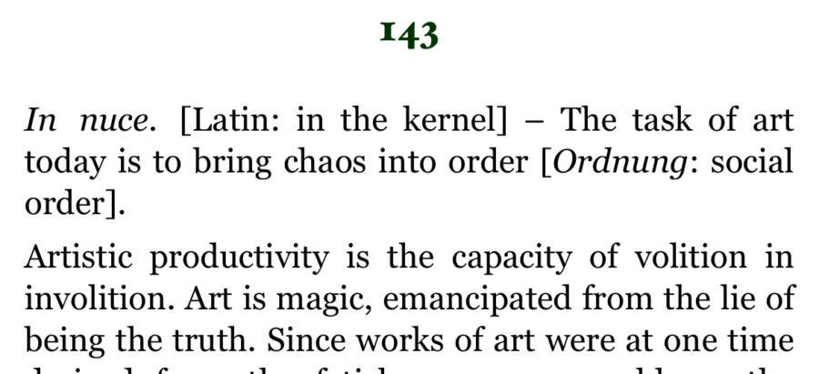

Hunter Foster: Involition
“…only a redeemed mankind receives the fullness of its past—which is to say, only for a redeemed mankind has its past become citable in all its moments.”
Walter Benjamin (1940)
I have a recurring dream in which I watch something monumental being torn from a base which elevates it. Occasionally I see the thing—vague but imposing—bound by ropes and pulled down. In other dreams, the object seems to be sheared off as if by an enormous invisible blade. Or, I watch it rotate autonomously, counter-clockwise, gradually elevating with each turn until it loosens from its foundation and silently falls. In each scene, I watch the toppling from a distance, held back from protesting or participating in its iconoclastic defeat. Without fail, I wake up from the dream with an unnatural amount of grief and shame, as if this object’s castration was my own. . . .
The impetus for this show began with a church steeple presented at Good Weather in 2024. In the previous spring, the steeple was severed from a church in North Little Rock, Arkansas by a tornado. I found it lying horizontally on the ground in the abandoned church lot, the hollow cavity of its base exposing a red fiberglass interior like an open mouth. The tapered form of the steeple launched a metonymic chain of associations in my mind. Inverted, it became a sign of the cause of its own destruction, its conical shape rhyming with that of a tornado’s. In its horizontal orientation, it resembled the horn of a gramophone or the petals of a trumpet lily. Through my research following that exhibition, I was startled to find a municipal siren used across the United States in tornado warning systems whose horn bore a striking resemblance to the steeple.
The siren is a Model 1003 Thunderbolt, a mechanical warning siren manufactured in Cook County, Illinois by the Federal Signal Corporation between 1952–1990. First used for civil defense, the sirens were repurposed after the end of the Cold War as storm warning systems. When in use, the siren rotates, dispersing high-intensity warning signals unidirectionally over a large area. Absent from its present iteration (remaining only as a memory of its past emanations), its sound is produced by a high speed axial fan (driven by a chopper motor) thrusting air through the throat of the machine and into the horn of the siren in forceful pulses as it spins. This combination of air, force, and rotation are elements that the siren shares with the tornado it is employed to warn against.
In Involition, this decommissioned tornado siren is accompanied by footage taken from the window of an aircraft flying around Arkansas. The plane’s propeller, visible on the left side of the frame throughout the duration of the video, moves at 2200 rotations per minute, or approximately 37 rotations per second. The footage has been slowed down to the rate at which the propeller cuts through the frame at one rotation per second. At this reduced speed, the aircraft seems to hover in the air as the propeller blade turns like the second hand of a clock. The footage culminates as the white steeple of a church enters into the frame. As the plane homes in on the church, the pilot—the artist’s father—executes an aileron roll: an acrobatic maneuver in which the aircraft rotates 360 degrees around a horizontal axis. In turn, the church (and steeple) appears as though it also revolves in space.
Hunter Foster (2026)
Involition by Hunter Foster is the New Haven-based artist’s third solo exhibition with Good Weather and is on view until April 4, 2026 with gallery hours on Saturdays from 1–5 p.m. or by appointment. The exhibition is dedicated to the artist’s grandparents, Tom and Becky Scott. Thank you to Billy Estes, John Riley, Hunter Riley, Jeff Foster, Fernando Arroyo, Max Pond, Dan Clyne, Jesse Zakrzewska, and Luke Winterble at Carolina Signaling Enterprises for their support in the realization of this exhibition.